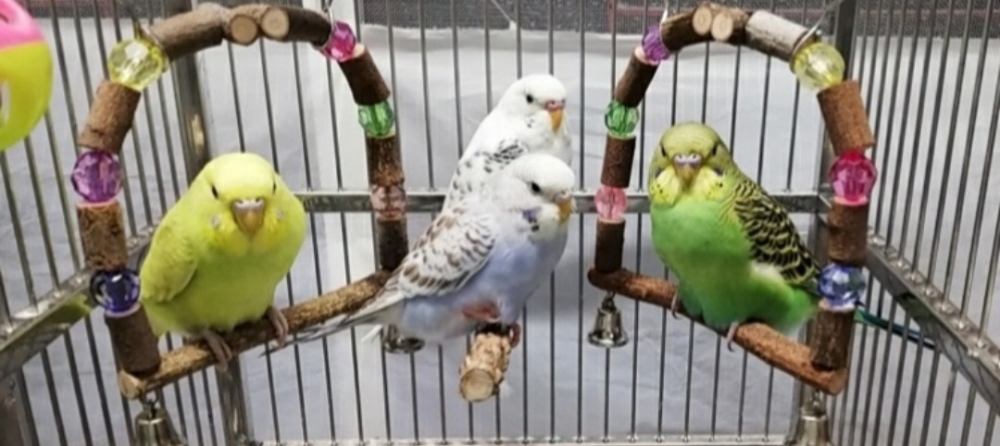
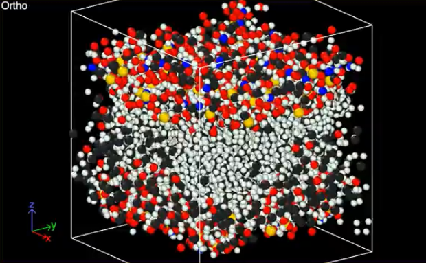
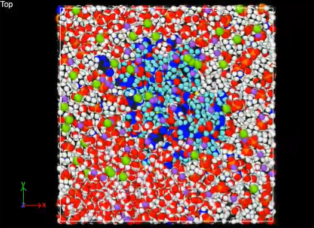
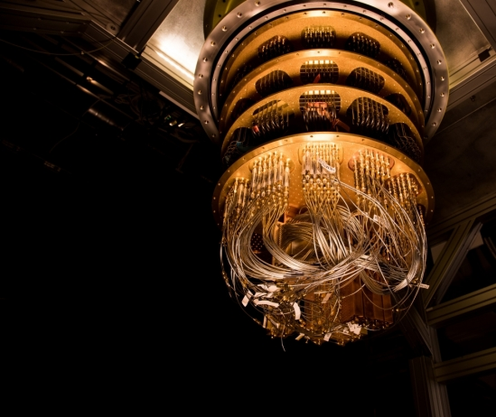
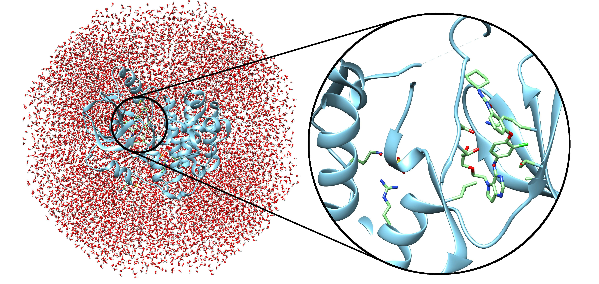

Projects
A space to share what projects I have done :>
Bird Song Audio Signal Analysis
A programming research project as a part of my Natural Sciences scientific computing course

Supervisor: Dr. Peter Bratby
Brief overview: Our team aimed to identify different bird species by performing Fourier Transforms (FT) on bird song audios
by comparing the birds' dominant, minumum, maximum and average frequency.
The frequency data that we were able to extract from the bird songs was not extensive enough to
consistently identify birds. Our database of birdsongs can be extended and refined in the future to overcome the complications and accquire more reliable data.
A preliminary trial using a Principle Component Analysis (PCA) was performed, and could be a potential method for identifying bird species by vocalisation in the future.
Python and Jupyter Notebooks are used throughout the project, collaborating our works using CoCalc. You can see the final report by
clicking here.
Credits: Louis Sharma, Nial Turner, Will Lowerie, Hannah Galbraith, Ryan Lau
|
Molecular and Business Modelling in Science
A summer project on LAMMPS, as a part of the NatSci Innovation Lab 2020.

Brief overview:
We wanted to create an introductory course in molecular modelling and simulation using LAMMPS, with some methods in business modelling, such as supply chain analystics using Python.
The highlight of our project is the simulation of the COVID-19 drug Remdesivir and its molecular dynamics with the human cell membrane (huge thanks to Lukas).
We have made a blog, detailing what we have found and done, with many useful documents, such as guides, tutorials and case studies.
The overall report pretty well summaries what the project is all about.
Some documents I contributed to the project:
- Installation guide for LAMMPS and other applications
- A review of the different applications of LAMMPS
- Pre & Post processing tools for LAMMPS
- Errors and troubleshooting in LAMMPS
Credits: Marcel Mordarski, Ryan Lau, Lukas Supragonas, Maja Walnik
|
Quantum Chemistry with an application in Drug Design
A project as a part of the Interdisciplinary Research Skills (IRS) module.


Supervisor: Mr. Thierry Tran
Brief overview:
Our team researched and discussed on how quantum chemistry and quantum computing techniques can aid and apply to the different stages of drug design. We studied and learnt
concepts in quantum chemistry, such as spectroscopy, computer-aided drug design, Nuclear Magnetic Resonance(NMR) and so on.
We also discussed the ethics of advanced scientific research. Our team produced an infographic, a poster and a podcast.
Credits: Marcel Mordarski, Ryan Lau, Nial Turner, Ebrahim Raja, Ella Fisher, Gloria Tang,
Abdulrahman Al-Shateri, Hannah Galbraith, Jinran Sun, Benjamin Parker, Alex Perkins
|
|

{kind=link}
{kind=link}